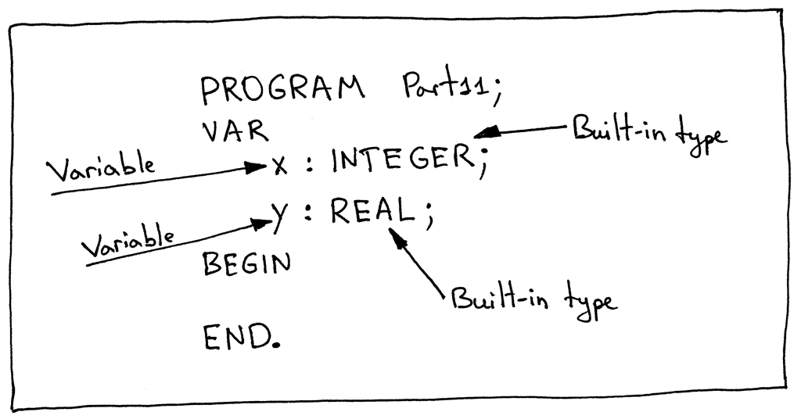
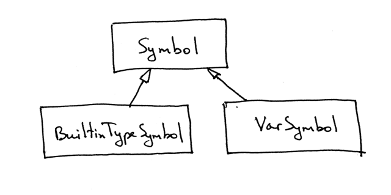
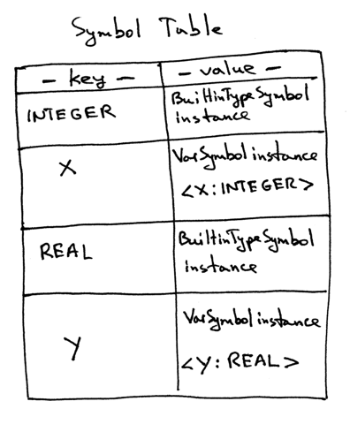
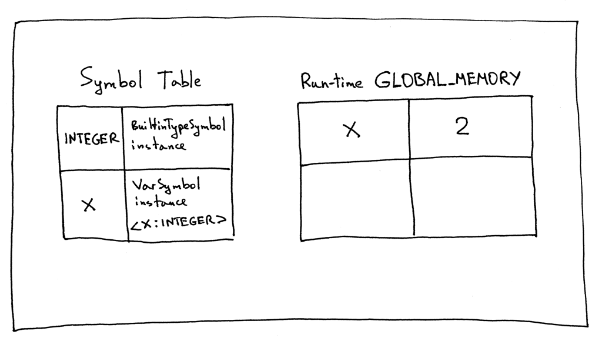

Recap what we’ve learned so far:
How to break sentences into tokens. The process is called lexical analysis and the part of the interpreter that does it is called a lexical analyzer, lexer, scanner, or tokenizer. We’ve learned how to write our own lexer from the ground up without using regular expressions or any other tools like Lex.
How to recognize a phrase in the stream of tokens. The process of recognizing a phrase in the stream of tokens or, to put it differently, the process of finding structure in the stream of tokens is called parsing or syntax analysis. The part of an interpreter or compiler that performs that job is called a parser or syntax analyzer.
How to represent a programming language’s syntax rules with syntax diagrams, which are a graphical representation of a programming language’s syntax rules. Syntax diagrams visually show us which statements are allowed in our programming language and which are not.
How to use another widely used notation for specifying the syntax of a programming language. It’s called context-free grammars (grammars, for short) or BNF (Backus-Naur Form).
How to map a grammar to code and how to write a recursive-descent parser.
How to write a really basic interpreter.
How associativity and precedence of operators work and how to construct a grammar using a precedence table.
How to build an Abstract Syntax Tree (AST) of a parsed sentence and how to represent the whole source program in Pascal as one big AST.
How to walk an AST and how to implement our interpreter as an AST node visitor.
With all that knowledge and experience under our belt, we’ve built an interpreter that can scan, parse, and build an AST and interpret, by walking the AST, our very first complete Pascal program.
With everything we’ve covered so far, we are almost ready to tackle topics like:
- Nested procedures and functions
- Procedure and function calls
- Semantic analysis (type checking, making sure variables are declared before they are used, and basically checking if a program makes sense)
- Control flow elements (like IF statements)
- Aggregate data types (Records)
- More built-in types
- Source-level debugger
- Miscellanea (All the other goodness not mentioned above)
But before we cover those topices, we need to dive deeper into the super important topic of symbols, symbol tables, and scopes. The topic itself will span several articles.
First, let’s talk about symbols and why we need to track them. What is a symbol ? In this case, we’ll informally define symbol as on identifier of some program entity like a variable, subroutine, or built-in type. For symbols to be useful they need to have at least the following information about the program entites they identify:
Name (x, y, number)
Category ( variable, subroutine, built-in type)
Type (INTEGER, REAL, STRING)
Today we’ll tackle variable symbols and built-in type symbols because we’ve already used variables and types before. By the way, the “built-in” type just means a type that hasn’t been defined by you and is available for you right out of the box, like INTEGER and REAL types.
Let’s take a look at the following Pascal program, specifically at the variable declaration part. You can see in the picture below that there are four symbols in that section: two variable symbols (x and y) and two built-in type symbols (INTEGER and REAL).

Let’s create a base Symbol class in Python:
class Symbol(object):
def __init__(self, name, type=None):
self.name = name
self.type = typeThe class takes the name and an optional type parameters.
What about the category of a symbol? We’ll encode the category of a symbol in the class name itself, which means we’ll create separate classes to represent different symbol categories.
Start wiith the basic built-in types. We’ve seen two built-in types so far, when we declared variables: INTEGER and REAL. Here is one option for us to represent a built-in type symbol in code:
class BuiltinTypeSymbol(Symbol):
def __init__(self,name):
# python 2.x
# super(BuiltinTypeSymbol, self).__init__(name)
super().__init__(name)
def __str__(self):
return self.name
__repr__ = __str__The class inherits from the Symbol class and the constructor requires only a name of the type. The category is encoded in the class name, and the type parameter from the base class for a built-in type symbol is None. The double underscore or duder in methods __str__ and __repr__ are special Python methods and we’ve defined them to have a nice formatted message when you print a symbol object.
We represent a variable symbol via a VarSymbol class:
class VarSymbol(Symbol):
def __init__(self, name, type):
super().__init__(name, type)
def __str__(self):
return '<{name}:{type}>'.format(name=self.name,type=self.type)
__repr__ = __str__In the class we made both the name and the type parameters required parameters and the class name VarSymbol clearly indicates that an instance of the class will identify a variable symbol (the category is variable).
Here is the hierarchy of symbols we’ve defined in visual form:

But why we even need to track those symbols in the first place?
To make sure that when we assign a value to a variable the types are correct (type checking)
To make sure that a variable is declared before used
To be able to identify cases like that even before interpreting/evaluating the source code of the program at run-time, we need to track program symbols. And where do we store the symbols that we track? In the symbol table!
A symbol table is an abstract data type (ADT) for tracking various symbols in source code. We implement our symbol table as a separate class with some helper methods:
class SymbolTable(object):
def __init__(self):
self._symbols = OrderedDict()
def __str__(self):
return 'Symbol: {symbols} '.format(
symbols=[value for value in self._symbols.values()]
)
__repr__ = __str__
def define(self, symbol):
print('Define %s ' % symbol)
self._symbols[symbol.name] = symbol
def lookup(self,name):
print('Lookup: %s ' % name)
symbol = self._symbols.get(name)
# `symbol` is either an instance of the Symbol class or 'None'
return symbolThere are two main operations that we will be performing with the symbol table: storing symbols and looking them up by name: define and lookup.
The method define takes a symbol as a parameter and stores it internally in itssymbols ordered dictionary using the symbol’s name as a key and the symbol instance as a value. The method _lookup takes a symbol name as a parameter and returns a symbol if it finds it or ‘None’ if not.
An example for the contents of the _symbols dictionary it would look like this:

How to automate the process of building the symbol table?
Write another node visitor that walks the AST built by the parser! (This is another example of how useful it is to have an intermediary form like AST. ) Instead of extending our parser to deal with symbol table, we separate concerns and write a new node visitor class.
We extend the SymbolTable class to initialize the built-in types when the symbol table instance is created. Codes here:
class SymbolTable(object):
def __init__(self):
self._symbols = OrderedDict()
self._init_builtins()
def _init_builtins(self):
self.define(BuiltinTypeSymbol('INTEGER'))
self.define(BuiltinTypeSymbol('REAL'))
def __str__(self):
return 'Symbols: {symbols}'.format(
symbols=[value for value in self._symbols.values()]
)
__repr__ = __str__
def define(self, symbol):
print('Define: %s ' % symbol)
self._symbols[symbol.name] = symbol
def lookup(self,name):
print('Look up: %s ' % name)
symbol = self._symbols.get(name)
# `symbol` is either an instance of the Symbol class or 'None'
return symbolNow onto the SymbolTableBuilder AST node visitor:
class SymbolTableBuilder(NodeVisitor):
def __init__(self):
self.symtab = SymbolTable()
def visit_Block(self,node):
for declaration in node.declarations:
self.visit(declaration)
self.visit(node.compound_statement)
def visit_Program(self, node):
self.visit(node.block)
def visit_BinOp(self, node):
self.visit(node.left)
self.visit(node.right)
def visit_Num(self, node):
pass
def visit_UnaryOp(self, node):
self.visit(node.expr)
def visit_Compound(self,node):
for child in node.children:
self.visit(child)
def visit_NoOp(self, node):
pass
def visit_VarDecl(self, node):
type_name = node.type_node.value
type_symbol = self.symtab.lookup(type_name)
var_name = node.var_node.value
var_symbol = VarSymbol(var_name, type_symbol)
self.symtab.define(var_symbol)The _visit_VarDecl_ method deserves special attention. It’s responsible for visiting (walking) a VarDecl AST node and storing the corresponding symbol in the symbol table. First, the method looks up the built-in type symbol by name in the symbol table, then it creates an instance of the VarSymbol class and stores (defines) it in the symbol table.
We can already put our symbol table and symbol table builder to good use: using them to verify that variables are declared befored used in assignments and expressions. All we need to do is just extend the visitor with two more methods:
def visit_Assign(self,node):
var_name = node.left.value
var_symbol = self.symtab.lookup(var_name)
if var_symbol is None
raise NameError(repr(var_name))
self.visit(node.right)
def visit_Var(self, node):
var_name = node.value
var_symbol = self.symtab.lookup(var_name)
if var_symbol is None:
raise NameError(repr(var_name))These methods will raise a NameError exception if they cannot find the symbol in the symbol table.
It should be emphasized that all those checks that our SymbolTableBuilder AST visitor makes are made before the run-time, so before our interpreter actually evaluates the source program.
For example, if we were to interpret the following program:
PROGRAM Part11;
VAR
x : INTEGER;
BEGIN
x := 2;
END.The contents of the symbol table and the run-time GLOBAL_MEMORY right before the program exited would look like this:

The symbol table doesn’t hold the value 2 for the variable “x”. That’s solely the interpreter’s job now.
Again, the Interpreter class has nothing to do with building the symbol table and it relies on the SymbolTableBuilder to make sure that variables in the source code are properly declared before they are used by the Interpreter.
Appendix
""" SPI - Simple Pascal Interpreter. Part 11."""
from collections import OrderedDict
###############################################################################
# #
# LEXER #
# #
###############################################################################
# Token types
#
# EOF (end-of-file) token is used to indicate that
# there is no more input left for lexical analysis
INTEGER = 'INTEGER'
REAL = 'REAL'
INTEGER_CONST = 'INTEGER_CONST'
REAL_CONST = 'REAL_CONST'
PLUS = 'PLUS'
MINUS = 'MINUS'
MUL = 'MUL'
INTEGER_DIV = 'INTEGER_DIV'
FLOAT_DIV = 'FLOAT_DIV'
LPAREN = 'LPAREN'
RPAREN = 'RPAREN'
ID = 'ID'
ASSIGN = 'ASSIGN'
BEGIN = 'BEGIN'
END = 'END'
SEMI = 'SEMI'
DOT = 'DOT'
PROGRAM = 'PROGRAM'
VAR = 'VAR'
COLON = 'COLON'
COMMA = 'COMMA'
EOF = 'EOF'
class Token(object):
def __init__(self, type, value):
self.type = type
self.value = value
def __str__(self):
"""String representation of the class instance.
Examples:
Token(INTEGER, 3)
Token(PLUS, '+')
Token(MUL, '*')
"""
return 'Token({type}, {value})'.format(
type=self.type,
value=repr(self.value)
)
def __repr__(self):
return self.__str__()
RESERVED_KEYWORDS = {
'PROGRAM': Token(PROGRAM, 'PROGRAM'),
'VAR': Token(VAR, 'VAR'),
'DIV': Token(INTEGER_DIV, 'DIV'),
'INTEGER': Token(INTEGER, 'INTEGER'),
'REAL': Token(REAL, 'REAL'),
'BEGIN': Token(BEGIN, 'BEGIN'),
'END': Token(END, 'END'),
}
class Lexer(object):
def __init__(self, text):
# client string input, e.g. "4 + 2 * 3 - 6 / 2"
self.text = text
# self.pos is an index into self.text
self.pos = 0
self.current_char = self.text[self.pos]
def error(self):
raise Exception('Invalid character')
def advance(self):
"""Advance the `pos` pointer and set the `current_char` variable."""
self.pos += 1
if self.pos > len(self.text) - 1:
self.current_char = None # Indicates end of input
else:
self.current_char = self.text[self.pos]
def peek(self):
peek_pos = self.pos + 1
if peek_pos > len(self.text) - 1:
return None
else:
return self.text[peek_pos]
def skip_whitespace(self):
while self.current_char is not None and self.current_char.isspace():
self.advance()
def skip_comment(self):
while self.current_char != '}':
self.advance()
self.advance() # the closing curly brace
def number(self):
"""Return a (multidigit) integer or float consumed from the input."""
result = ''
while self.current_char is not None and self.current_char.isdigit():
result += self.current_char
self.advance()
if self.current_char == '.':
result += self.current_char
self.advance()
while (
self.current_char is not None and
self.current_char.isdigit()
):
result += self.current_char
self.advance()
token = Token(REAL_CONST, float(result))
else:
token = Token(INTEGER_CONST, int(result))
return token
def _id(self):
"""Handle identifiers and reserved keywords"""
result = ''
while self.current_char is not None and self.current_char.isalnum():
result += self.current_char
self.advance()
token = RESERVED_KEYWORDS.get(result, Token(ID, result))
return token
def get_next_token(self):
"""Lexical analyzer (also known as scanner or tokenizer)
This method is responsible for breaking a sentence
apart into tokens. One token at a time.
"""
while self.current_char is not None:
if self.current_char.isspace():
self.skip_whitespace()
continue
if self.current_char == '{':
self.advance()
self.skip_comment()
continue
if self.current_char.isalpha():
return self._id()
if self.current_char.isdigit():
return self.number()
if self.current_char == ':' and self.peek() == '=':
self.advance()
self.advance()
return Token(ASSIGN, ':=')
if self.current_char == ';':
self.advance()
return Token(SEMI, ';')
if self.current_char == ':':
self.advance()
return Token(COLON, ':')
if self.current_char == ',':
self.advance()
return Token(COMMA, ',')
if self.current_char == '+':
self.advance()
return Token(PLUS, '+')
if self.current_char == '-':
self.advance()
return Token(MINUS, '-')
if self.current_char == '*':
self.advance()
return Token(MUL, '*')
if self.current_char == '/':
self.advance()
return Token(FLOAT_DIV, '/')
if self.current_char == '(':
self.advance()
return Token(LPAREN, '(')
if self.current_char == ')':
self.advance()
return Token(RPAREN, ')')
if self.current_char == '.':
self.advance()
return Token(DOT, '.')
self.error()
return Token(EOF, None)
###############################################################################
# #
# PARSER #
# #
###############################################################################
class AST(object):
pass
class BinOp(AST):
def __init__(self, left, op, right):
self.left = left
self.token = self.op = op
self.right = right
class Num(AST):
def __init__(self, token):
self.token = token
self.value = token.value
class UnaryOp(AST):
def __init__(self, op, expr):
self.token = self.op = op
self.expr = expr
class Compound(AST):
"""Represents a 'BEGIN ... END' block"""
def __init__(self):
self.children = []
class Assign(AST):
def __init__(self, left, op, right):
self.left = left
self.token = self.op = op
self.right = right
class Var(AST):
"""The Var node is constructed out of ID token."""
def __init__(self, token):
self.token = token
self.value = token.value
class NoOp(AST):
pass
class Program(AST):
def __init__(self, name, block):
self.name = name
self.block = block
class Block(AST):
def __init__(self, declarations, compound_statement):
self.declarations = declarations
self.compound_statement = compound_statement
class VarDecl(AST):
def __init__(self, var_node, type_node):
self.var_node = var_node
self.type_node = type_node
class Type(AST):
def __init__(self, token):
self.token = token
self.value = token.value
class Parser(object):
def __init__(self, lexer):
self.lexer = lexer
# set current token to the first token taken from the input
self.current_token = self.lexer.get_next_token()
def error(self):
raise Exception('Invalid syntax')
def eat(self, token_type):
# compare the current token type with the passed token
# type and if they match then "eat" the current token
# and assign the next token to the self.current_token,
# otherwise raise an exception.
if self.current_token.type == token_type:
self.current_token = self.lexer.get_next_token()
else:
self.error()
def program(self):
"""program : PROGRAM variable SEMI block DOT"""
self.eat(PROGRAM)
var_node = self.variable()
prog_name = var_node.value
self.eat(SEMI)
block_node = self.block()
program_node = Program(prog_name, block_node)
self.eat(DOT)
return program_node
def block(self):
"""block : declarations compound_statement"""
declaration_nodes = self.declarations()
compound_statement_node = self.compound_statement()
node = Block(declaration_nodes, compound_statement_node)
return node
def declarations(self):
"""declarations : VAR (variable_declaration SEMI)+
| empty
"""
declarations = []
if self.current_token.type == VAR:
self.eat(VAR)
while self.current_token.type == ID:
var_decl = self.variable_declaration()
declarations.extend(var_decl)
self.eat(SEMI)
return declarations
def variable_declaration(self):
"""variable_declaration : ID (COMMA ID)* COLON type_spec"""
var_nodes = [Var(self.current_token)] # first ID
self.eat(ID)
while self.current_token.type == COMMA:
self.eat(COMMA)
var_nodes.append(Var(self.current_token))
self.eat(ID)
self.eat(COLON)
type_node = self.type_spec()
var_declarations = [
VarDecl(var_node, type_node) for var_node in var_nodes
]
return var_declarations
def type_spec(self):
"""type_spec : INTEGER
| REAL
"""
token = self.current_token
if self.current_token.type == INTEGER:
self.eat(INTEGER)
else:
self.eat(REAL)
node = Type(token)
return node
def compound_statement(self):
"""
compound_statement: BEGIN statement_list END
"""
self.eat(BEGIN)
nodes = self.statement_list()
self.eat(END)
root = Compound()
for node in nodes:
root.children.append(node)
return root
def statement_list(self):
"""
statement_list : statement
| statement SEMI statement_list
"""
node = self.statement()
results = [node]
while self.current_token.type == SEMI:
self.eat(SEMI)
results.append(self.statement())
return results
def statement(self):
"""
statement : compound_statement
| assignment_statement
| empty
"""
if self.current_token.type == BEGIN:
node = self.compound_statement()
elif self.current_token.type == ID:
node = self.assignment_statement()
else:
node = self.empty()
return node
def assignment_statement(self):
"""
assignment_statement : variable ASSIGN expr
"""
left = self.variable()
token = self.current_token
self.eat(ASSIGN)
right = self.expr()
node = Assign(left, token, right)
return node
def variable(self):
"""
variable : ID
"""
node = Var(self.current_token)
self.eat(ID)
return node
def empty(self):
"""An empty production"""
return NoOp()
def expr(self):
"""
expr : term ((PLUS | MINUS) term)*
"""
node = self.term()
while self.current_token.type in (PLUS, MINUS):
token = self.current_token
if token.type == PLUS:
self.eat(PLUS)
elif token.type == MINUS:
self.eat(MINUS)
node = BinOp(left=node, op=token, right=self.term())
return node
def term(self):
"""term : factor ((MUL | INTEGER_DIV | FLOAT_DIV) factor)*"""
node = self.factor()
while self.current_token.type in (MUL, INTEGER_DIV, FLOAT_DIV):
token = self.current_token
if token.type == MUL:
self.eat(MUL)
elif token.type == INTEGER_DIV:
self.eat(INTEGER_DIV)
elif token.type == FLOAT_DIV:
self.eat(FLOAT_DIV)
node = BinOp(left=node, op=token, right=self.factor())
return node
def factor(self):
"""factor : PLUS factor
| MINUS factor
| INTEGER_CONST
| REAL_CONST
| LPAREN expr RPAREN
| variable
"""
token = self.current_token
if token.type == PLUS:
self.eat(PLUS)
node = UnaryOp(token, self.factor())
return node
elif token.type == MINUS:
self.eat(MINUS)
node = UnaryOp(token, self.factor())
return node
elif token.type == INTEGER_CONST:
self.eat(INTEGER_CONST)
return Num(token)
elif token.type == REAL_CONST:
self.eat(REAL_CONST)
return Num(token)
elif token.type == LPAREN:
self.eat(LPAREN)
node = self.expr()
self.eat(RPAREN)
return node
else:
node = self.variable()
return node
def parse(self):
"""
program : PROGRAM variable SEMI block DOT
block : declarations compound_statement
declarations : VAR (variable_declaration SEMI)+
| empty
variable_declaration : ID (COMMA ID)* COLON type_spec
type_spec : INTEGER
compound_statement : BEGIN statement_list END
statement_list : statement
| statement SEMI statement_list
statement : compound_statement
| assignment_statement
| empty
assignment_statement : variable ASSIGN expr
empty :
expr : term ((PLUS | MINUS) term)*
term : factor ((MUL | INTEGER_DIV | FLOAT_DIV) factor)*
factor : PLUS factor
| MINUS factor
| INTEGER_CONST
| REAL_CONST
| LPAREN expr RPAREN
| variable
variable: ID
"""
node = self.program()
if self.current_token.type != EOF:
self.error()
return node
###############################################################################
# #
# AST visitors (walkers) #
# #
###############################################################################
class NodeVisitor(object):
def visit(self, node):
method_name = 'visit_' + type(node).__name__
visitor = getattr(self, method_name, self.generic_visit)
return visitor(node)
def generic_visit(self, node):
raise Exception('No visit_{} method'.format(type(node).__name__))
###############################################################################
# #
# SYMBOLS and SYMBOL TABLE #
# #
###############################################################################
class Symbol(object):
def __init__(self, name, type=None):
self.name = name
self.type = type
class VarSymbol(Symbol):
def __init__(self, name, type):
super().__init__(name, type)
def __str__(self):
return '<{name}:{type}>'.format(name=self.name, type=self.type)
__repr__ = __str__
class BuiltinTypeSymbol(Symbol):
def __init__(self, name):
super().__init__(name)
def __str__(self):
return self.name
__repr__ = __str__
class SymbolTable(object):
def __init__(self):
self._symbols = OrderedDict()
self._init_builtins()
def _init_builtins(self):
self.define(BuiltinTypeSymbol('INTEGER'))
self.define(BuiltinTypeSymbol('REAL'))
def __str__(self):
return 'Symbols: {symbols}'.format(
symbols=[value for value in self._symbols.values()]
)
__repr__ = __str__
def define(self, symbol):
print('Define: %s' % symbol)
self._symbols[symbol.name] = symbol
def lookup(self, name):
print('Lookup: %s' % name)
symbol = self._symbols.get(name)
# 'symbol' is either an instance of the Symbol class or 'None'
return symbol
class SymbolTableBuilder(NodeVisitor):
def __init__(self):
self.symtab = SymbolTable()
def visit_Block(self, node):
for declaration in node.declarations:
self.visit(declaration)
self.visit(node.compound_statement)
def visit_Program(self, node):
self.visit(node.block)
def visit_BinOp(self, node):
self.visit(node.left)
self.visit(node.right)
def visit_Num(self, node):
pass
def visit_UnaryOp(self, node):
self.visit(node.expr)
def visit_Compound(self, node):
for child in node.children:
self.visit(child)
def visit_NoOp(self, node):
pass
def visit_VarDecl(self, node):
type_name = node.type_node.value
type_symbol = self.symtab.lookup(type_name)
var_name = node.var_node.value
var_symbol = VarSymbol(var_name, type_symbol)
self.symtab.define(var_symbol)
def visit_Assign(self, node):
var_name = node.left.value
var_symbol = self.symtab.lookup(var_name)
if var_symbol is None:
raise NameError(repr(var_name))
self.visit(node.right)
def visit_Var(self, node):
var_name = node.value
var_symbol = self.symtab.lookup(var_name)
if var_symbol is None:
raise NameError(repr(var_name))
###############################################################################
# #
# INTERPRETER #
# #
###############################################################################
class Interpreter(NodeVisitor):
def __init__(self, tree):
self.tree = tree
self.GLOBAL_MEMORY = OrderedDict()
def visit_Program(self, node):
self.visit(node.block)
def visit_Block(self, node):
for declaration in node.declarations:
self.visit(declaration)
self.visit(node.compound_statement)
def visit_VarDecl(self, node):
pass
def visit_Type(self, node):
pass
def visit_BinOp(self, node):
if node.op.type == PLUS:
return self.visit(node.left) + self.visit(node.right)
elif node.op.type == MINUS:
return self.visit(node.left) - self.visit(node.right)
elif node.op.type == MUL:
return self.visit(node.left) * self.visit(node.right)
elif node.op.type == INTEGER_DIV:
return self.visit(node.left) // self.visit(node.right)
elif node.op.type == FLOAT_DIV:
return float(self.visit(node.left)) / float(self.visit(node.right))
def visit_Num(self, node):
return node.value
def visit_UnaryOp(self, node):
op = node.op.type
if op == PLUS:
return +self.visit(node.expr)
elif op == MINUS:
return -self.visit(node.expr)
def visit_Compound(self, node):
for child in node.children:
self.visit(child)
def visit_Assign(self, node):
var_name = node.left.value
var_value = self.visit(node.right)
self.GLOBAL_MEMORY[var_name] = var_value
def visit_Var(self, node):
var_name = node.value
var_value = self.GLOBAL_MEMORY.get(var_name)
return var_value
def visit_NoOp(self, node):
pass
def interpret(self):
tree = self.tree
if tree is None:
return ''
return self.visit(tree)
def main():
import sys
text = open(sys.argv[1], 'r').read()
lexer = Lexer(text)
parser = Parser(lexer)
tree = parser.parse()
symtab_builder = SymbolTableBuilder()
symtab_builder.visit(tree)
print('-----')
print('Symbol Table Contents:')
print(symtab_builder.symtab)
interpreter = Interpreter(tree)
result = interpreter.interpret()
print('-----')
print('Run-time GLOBAL_MEMORY contents:')
for k, v in sorted(interpreter.GLOBAL_MEMORY.items()):
print('%s = %s' % (k, v))
if __name__ == '__main__':
main()